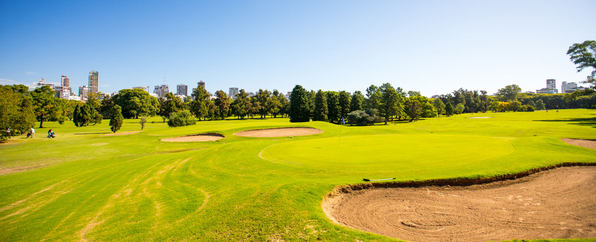

El golf es un deporte cuyo objetivo es introducir una bola en los hoyos que están distribuidos en el campo con el menor número de golpes, utilizando para cada tipo de golpe uno de entre un conjunto de palos ligeramente diferentes entre sí, ya que la cabeza del palo tiene ángulos distintos, al igual que las varillas tienen longitudes diferentes. A menor número de grados de inclinación, mayor longitud de la varilla y, por lo tanto, más distancia. Como máximo se pueden llevar catorce palos y como mínimo cinco palos.